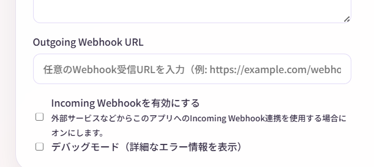
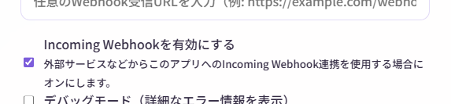

Webhook連携
Webhook機能を使うと、Narrative Conversationを外部のツールやサービスと連携できます。
上級者向け機能
この機能は、プログラミングやAPI連携の知識がある方向けです。初心者の方は、まず基本機能をマスターしてからチャレンジしてください。
Webhookとは？
Webhookは、アプリ間でデータをやり取りする仕組みです。
Narrative Conversationでは、2種類のWebhookが使えます：
- Outgoing Webhook - 物語が再生されたら、外部に通知
- Incoming Webhook - 外部から物語に介入
Outgoing Webhook
物語のエントリが生成あるいはアニメーション再生されるたびに、指定したURLにデータを送信します。
用途例
- Discord、Slackに物語を自動投稿
- 外部データベースに保存
- 音声合成ツールで読み上げ
- 照明やガジェットを物語に連動
設定方法
- 上部メニューから 「設定」
- 「Outgoing Webhook URL」 にURLを入力
- 自動保存される

送信されるデータ
エントリが生成されると、以下のJSON形式でPOSTリクエストが送信されます：
{
"type": "dialogue",
"name": "アリス",
"content": "こんにちは！",
"createdAt": "2025-01-01T12:00:00Z",
"storyId": "story-abc123"
}
Python受信サンプル
以下のコードは例示です。動作確認をしていません。
実際に使用する場合は、セキュリティやエラーハンドリングを十分に考慮してください。
Webhookを受信するシンプルなPythonサーバーの例：
from flask import Flask, request, jsonify
app = Flask(__name__)
@app.route('/webhook', methods=['POST'])
def receive_webhook():
"""Narrative ConversationからのWebhookを受信"""
try:
data = request.json
# 受信したデータを表示
print("=" * 50)
print(f"タイプ: {data.get('type')}")
print(f"名前: {data.get('name', '(なし)')}")
print(f"内容: {data.get('content')}")
print(f"作成日時: {data.get('createdAt')}")
print(f"物語ID: {data.get('storyId')}")
print("=" * 50)
# 必要に応じてここで処理を追加
# - データベースに保存
# - Discordに投稿
# - 音声合成で読み上げ
# など
return jsonify({"status": "ok"}), 200
except Exception as e:
print(f"エラー: {e}")
return jsonify({"status": "error", "message": str(e)}), 500
if __name__ == '__main__':
# ポート5000で起動
print("Webhook受信サーバーを起動中...")
print("Narrative Conversationの設定で以下を入力してください:")
print(" Webhook URL: http://127.0.0.1:5000/webhook")
app.run(host='127.0.0.1', port=5000, debug=True)
使い方：
- 上記コードを
webhook_receiver.pyとして保存 - Flaskをインストール：
pip install flask - サーバーを起動：
python webhook_receiver.py - Narrative Conversationの設定で、Webhook URLに
http://127.0.0.1:5000/webhookを入力
Incoming Webhook
外部から物語にエントリを追加できます。
用途例
- IoTデバイスからイベントを送信
- 外部スクリプトで物語を制御
- チャットボットとの連携
有効化方法
- 上部メニューから 「設定」
- 「Incoming Webhookを有効にする」 にチェック
- 自動保存される

エンドポイント
有効化すると、以下のエンドポイントが利用可能になります：
送信データ形式
以下のJSON形式でPOSTリクエストを送信します：
| フィールド | 必須 | 説明 |
|---|---|---|
type |
エントリタイプ（dialogue, action, narration, direction, generate） | |
content |
エントリの内容 | |
name |
キャラクター名（dialogueとactionの場合） |
generateタイプ
typeにgenerateを指定すると、即座にAIに物語の続きを生成させることができます。- 例：
{"type": "generate", "content": "", "name": null} - この際、設定にかかわらず確認ダイアログは表示されません。
- ただし、競合やセッションロストの際は停止します。
Pythonでの送信例
import requests
url = "http://127.0.0.1:8000/webhook"
data = {
"type": "narration",
"content": "突然、大きな音が聞こえた。"
}
response = requests.post(url, json=data)
print(response.status_code) # 200 なら成功
curlでの送信例
curl -X POST http://127.0.0.1:8000/webhook \
-H "Content-Type: application/json" \
-d '{"type":"narration","content":"突然、大きな音が聞こえた。"}'
JSON連動機能
JSON連動は、物語内にJSON形式のデータを埋め込んで、外部ツールに指示を送る機能です。
非常に高度な機能
この機能は、プログラミングと外部ツール開発の知識が必要です。
使い方
- 上部メニューから 「設定」
- 「JSON定義」 に、JSONのスキーマ（仕様）を入力
例：
このJSONは照明制御に使われます。
color: ライトの色（red, blue, green, white）
brightness: 明るさ（0〜100）
例：
{"color": "red", "brightness": 80}
- AIが物語内にJSONを生成します
生成例：
- Outgoing Webhookで外部に送信され、ツールが反応します
用途例
- スマートライトを物語に連動
- ロボットを物語に合わせて動かす
- ゲームエンジンと連携
- IoTデバイスと連動
詳細は JSON連動機能 のページを参照してください。
セキュリティ上の注意
Incoming Webhookのリスク
Incoming Webhookを有効にすると、ローカルネットワーク内の誰でも物語にエントリを追加できます。
重要
- インターネットに公開しないでください
- 信頼できるネットワークでのみ使用してください
- 不要な時は無効化してください
Outgoing Webhookのリスク
送信先URLが信頼できるサービスか確認してください。
- 物語の内容が外部に送信されます
- 機密情報を含む物語には使用しないでください
安全性に関する注意
外部ツールや外部機器の制御を伴うため、安全性に十分注意してください。
- 信頼できるツールのみ使用してください。
- 熱源や感電などの危険がある機器は特に注意してください。
- 万が一の誤動作に備え、緊急停止手段を用意してください。
トラブルシューティング
Outgoing Webhookが動作しない
確認事項：
- URLが正しいか（https:// または http://）
- 送信先サービスが稼働しているか
- ファイアウォールでブロックされていないか
- タイムアウト設定が適切か（設定→通信タイムアウト）
Incoming Webhookでエラーが出る
確認事項：
- Incoming Webhookが有効になっているか
- JSON形式が正しいか
typeとcontentが含まれているか- サーバーが起動しているか
よくある質問
Q. Webhookは無料ですか？
A. Narrative Conversation自体は無料ですが、連携先のサービスによっては料金が発生する場合があります。
また、生成処理を実行することで、AIプロバイダの利用料金は別途発生します。
Q. Webhookを使わなくても大丈夫ですか？
A. はい、Webhookは完全にオプションです。
基本的な物語作成には不要です。
Q. 複数のWebhook URLを設定できますか？
A. 現在は1つのみです。
複数のサービスに送信したい場合は、中間サーバーを立てて転送する必要があります。
Q. セキュリティは大丈夫ですか？
A. ローカルネットワーク内でのみ使用する限り、比較的安全です。
インターネットに公開するのは避けてください。
まとめ
Webhook機能を使えば：
- 物語を外部ツールと連携
- IoTデバイスと連動
- 自動化・拡張が可能
上級者向けですが、使いこなせば物語体験がさらに広がります！